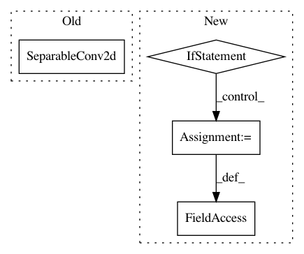

2318052dc79966bf36675606b7d992a347418292,gluoncv/model_zoo/nasnet.py,BranchSeparables,__init__,#BranchSeparables#Any#Any#Any#Any#Any#Any#,75
Before Change
stride, padding, use_bias=use_bias))
self.body.add(nn.BatchNorm(momentum=0.1, epsilon=0.001))
self.body.add(nn.Activation("relu"))
self.body.add(SeparableConv2d(in_channels, out_channels, kernel_size,
1, padding, use_bias=use_bias))
self.body.add(nn.BatchNorm(momentum=0.1, epsilon=0.001))
def hybrid_forward(self, F, x):
After Change
class BranchSeparables(HybridBlock):
def __init__(self, in_channels, out_channels, kernel_size, stride, padding,
norm_layer, norm_kwargs, use_bias=False):
super(BranchSeparables, self).__init__()
self.body = nn.HybridSequential(prefix="")
self.body.add(nn.Activation("relu"))
self.body.add(SeparableConv2d(in_channels, in_channels, kernel_size,
stride, padding, use_bias=use_bias))
self.body.add(norm_layer(momentum=0.1, epsilon=0.001,
**({} if norm_kwargs is None else norm_kwargs)))
self.body.add(nn.Activation("relu"))
self.body.add(SeparableConv2d(in_channels, out_channels, kernel_size,
In pattern: SUPERPATTERN
Frequency: 3
Non-data size: 4
Instances
Project Name: dmlc/gluon-cv
Commit Name: 2318052dc79966bf36675606b7d992a347418292
Time: 2019-01-07
Author: cheungchih@gmail.com
File Name: gluoncv/model_zoo/nasnet.py
Class Name: BranchSeparables
Method Name: __init__
Project Name: dmlc/gluon-cv
Commit Name: 2318052dc79966bf36675606b7d992a347418292
Time: 2019-01-07
Author: cheungchih@gmail.com
File Name: gluoncv/model_zoo/nasnet.py
Class Name: BranchSeparablesReduction
Method Name: __init__
Project Name: osmr/imgclsmob
Commit Name: 57c40574673c3d0d35076234d3e55b46a3be5891
Time: 2018-08-23
Author: osemery@gmail.com
File Name: pytorch/models/nasnet.py
Class Name: BranchSeparablesStem
Method Name: __init__